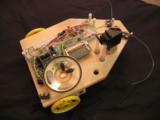
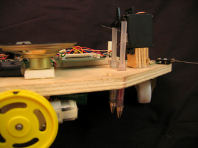
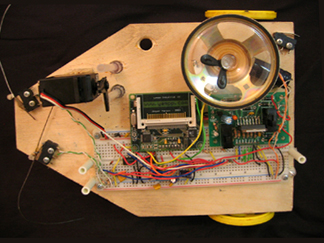
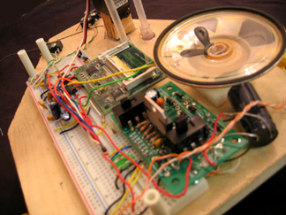

2005 Oct, Drawing Machine v2 sponsored by Gana Art Center / 2005 May, Drawing Machine v1, Robot
Drawing Machine v2(2005)
Detailed Picture
 
 
Museum Documentation (Please turn on the volume)
Drawing Machine is connected to an MP3 player via Basic Stamp and was programmed to defer in pictorial output by contrasting in turns and speed in accordance with pitch and note of saved songs.
Exhibition/Grant
2005 Nov, 10 years later, Gana Arts Center, Seoul, Korea
Drawing Machine v1(2005)
Museum Documentation (Please turn on the volume)